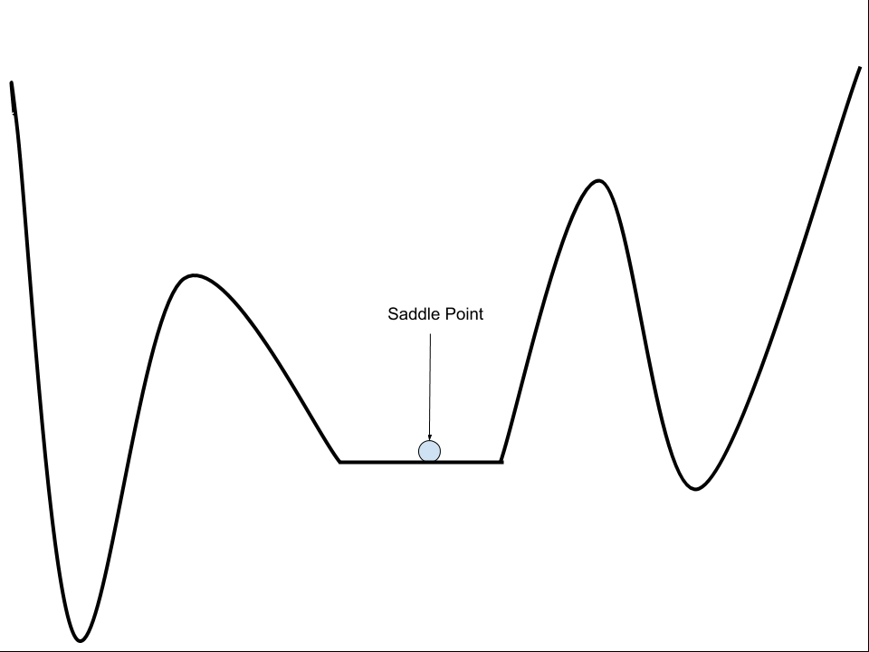

Ensuring drug safety is one of the main challenges in the drug discovery process. Interpreting information of the known effects of drugs and predicting their side effects are complex tasks. Scientists and engineers from research institutions and pharmaceutical companies like Roche and Pfizer have been trying to use machine learning to get meaningful information from clinical data obtained in clinical trials. Interpretation of this data in the context of drug safety is an active area of research.

Example-of-a-Saddle-point-on-an-Error-Surface
- Possibly Questionable Solution Quality.
- optimization process may or may not find a good solution and solutions can only be compared relatively, due to deceptive local minima.
- Possibly Long Training Time.
- The optimization process may take a long time to find a satisfactory solution, due to the iterative nature of the search.
- Possible Failure.
- The optimization process may fail to progress (get stuck) or fail to locate a viable solution, due to the presence of flat regions.
- Company Culture.
- Historically, the manufacturing industry has shied away from opaque logic. Businesses and employees prefer to have a close eye on all processes, diagrams, and data. The machine-learning approach of collecting data and deriving an algorithm from it (instead of the traditional approach of taking an algorithm and deriving data from it) is counter-cultural for manufacturing process engineers.
- Lack of Standardization.
- There are over a thousand protocols for devices across the different segments of the manufacturing industry. Having multiple standards for manufacturing equipment can make it difficult to normalize and connect data. These difficulties increase when considering that in many cases, equipment in manufacturing facilities comes from different suppliers.
- High Stakes.
- Depending on the manufacturing domain, machine learning and automation in the industry is still considered high stakes for many. Apprehension remains around machine safety in an actively evolving area that mixes automated machinery and humans. Manufacturing errors are also quite costly, so manual quality control and processes are still valued in many businesses. As a result, organizations are conservative in terms of the processes they automate.
A system doesn’t perform well if the training set is too small, or if the data is not generalized, noisy, and corrupted with irrelevant features.